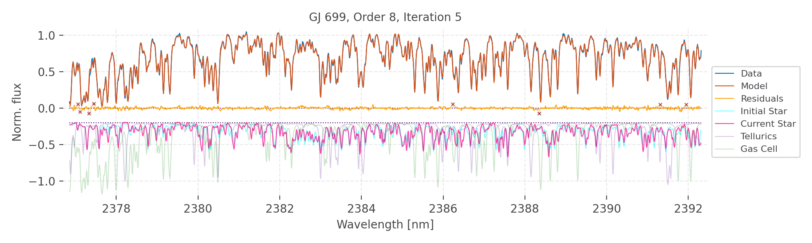

Bryson Cale
NASA Postdoctoral Fellow
@ JPL / IPAC

NASA Postdoctoral Fellow
@ JPL / IPAC
I primarily search for exoplanets with the radial-velocity (RV) technique. Planets do not orbit a stationary star, but rather the entire system orbits around its center of mass. Changes in the star's apparent velocity along our line of sight can be measured via Doppler Spectroscopy.Significant periods in these changes correspond to the effective year for the candidate perturber, and the relative amplitude of the velocity change will can be used to measure the mass of the object. Searching for planets around K and M dwarfs in particular provides a potential shortcut to finding habitable zone worlds.
I utilize a variety of spectrographs, including PARVI, iSHELL, CHIRON, MINERVA, and MINERVA-Australis. I develop the codes to delicately compute the radial velocities from the raw spectral data these facilities provide.
I am also interested in general-purpose mathematical optimization packages - particularly those based on Bayesian inference.
Codes I've developed:

1. Pychell is a package to reduce and extract high resolution echelle spectra, generate precise radial velocities, and fit orbital models to the those RVs. Pychell makes use of the optimize package below.

2. Optimize is a suite for generic Bayesian inference and optimization routines. Included is an iterative Nelder Mead algorithm with support for bounded parameters, and is demonstrated to be robust in high dimensional parameter spaces so long as enough of the initial guesses are reasonably accurate. (frequently tested in ~ 50 dimensions).


For work and for fun, I primarily program in either Python or Julia. I enjoy exploring and visualizing fractal geometry in the complex plane and other intersting mathematical entities. I also enjoy exploring programming languages in general and will occasionally code in a variety of random modern languages from Rust to Crystal to Go.

bryson.cale1@gmail.com